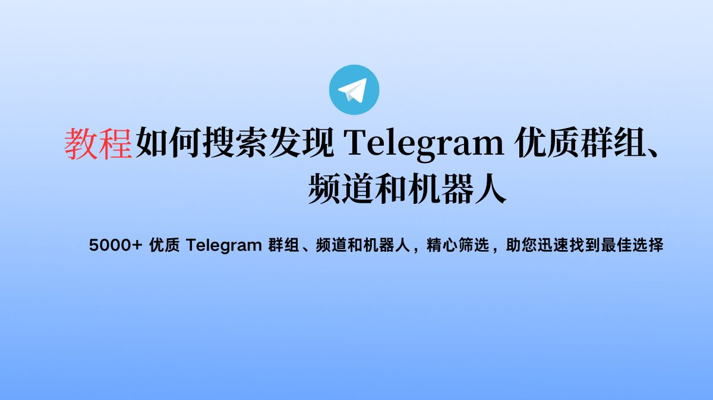

Telegram隐私空间是什么？
Telegram隐私空间是一个Telegram提供的私密存储功能，用户可以在其中存储私人文件和信息。这些内容完全是私密的，只有用户自己可以访问，不会被云端服务器或任何其他用户看到，保证了数据的隐私性和安全性。

Telegram隐私空间的基本概念
隐私空间的定义和功能
- 定义: Telegram隐私空间是一个安全的存储区，用户可以在其中存储文件、消息和媒体，这些内容完全私密，仅用户可见，不会被服务器或其他用户访问。
- 加密存储: 所有存储在隐私空间的数据都通过端到端加密技术进行保护，确保数据在传输和存储过程中的安全性。
- 功能用途: 隐私空间不仅可以存储敏感文件和个人数据，也常被用作备份通讯记录和重要信息的安全地点，支持跨设备访问。
如何访问和使用Telegram隐私空间
- 访问方式: 用户需要在Telegram下载好的应用中进入设置菜单，选择“隐私和安全”选项，然后找到并点击“隐私空间”入口来访问。
- 存储文件: 在隐私空间中，用户可以通过点击“添加文件”按钮来上传文件或媒体。支持的类型包括文档、图片、视频等。文件上传后，将只对用户本人可见。
- 管理和组织: 用户可以对隐私空间中的文件进行管理，如创建文件夹分类存储、重命名文件、删除不需要的文件等。此外，还可以设定文件的分享权限，决定是否允许其他设备访问这些文件。
如何在Telegram隐私空间中存储文件
存储文件的步骤说明
- 进入隐私空间: 打开Telegram应用，前往设置菜单，选择“数据与存储”，然后找到并点击“隐私空间”选项。
- 上传文件: 在隐私空间界面，点击“添加文件”按钮，从你的设备中选择你想要上传的文件。你也可以直接拖放文件到应用界面中进行上传。
- 整理文件: 文件上传后，可以将其归类到不同的文件夹中，便于未来的查找和管理。用户可以创建新的文件夹并命名，然后将相关文件移动到相应的文件夹中。
支持的文件类型和大小限制
- 文件类型: Telegram隐私空间支持多种文件类型的存储，包括但不限于PDF文档、图片文件（如JPEG、PNG）、视频文件（如MP4）、音频文件（如MP3）和压缩文件（如ZIP）。
- 大小限制: Telegram对于单个文件的大小没有明确的限制，但整体存储空间受到你的Telegram云存储容量的约束，这通常是非常宽松的。对于极大的文件，应用可能需要较长的上传时间和稳定的网络连接。
- 文件管理: 用户可以随时检查每个文件的详细信息，包括文件类型、大小、上传日期和是否已经加密。此外，用户也可以随时删除不再需要的文件，释放存储空间。
Telegram隐私空间的安全性分析
加密技术的应用
- 端到端加密: Telegram隐私空间中的文件和通讯都采用端到端加密技术。这意味着数据从发送方到接收方的整个传输过程都是加密的，即使是Telegram服务器也无法读取内容。
- 安全密钥管理: Telegram使用基于Diffie-Hellman密钥交换协议的加密方法，确保每次通讯的加密密钥都是唯一的且仅对通信双方可见，极大增强了通信的安全性。
- 云存储安全: 虽然Telegram的消息和文件存储在云端，但所有数据在上传到服务器之前就已经在本地完成加密，这保证了数据在服务器上的存储和传输过程中的安全性。
对比其他社交平台的隐私功能
- 与WhatsApp对比: WhatsApp同样提供端到端加密，但其备份通常存储在第三方云服务（如Google Drive或iCloud）上，并非默认加密，这可能成为数据泄露的潜在风险点。而Telegram的所有数据都在其自有的加密云存储中安全存储。
- 与Facebook Messenger对比: Facebook Messenger提供了“秘密对话”选项来实现端到端加密，但这不是默认设置。相比之下，Telegram的所有私聊都默认使用端到端加密。
- 与Signal对比: Signal是以安全性著称的另一款应用，它提供全面的端到端加密并且开源，这使得其安全性得到了社区的广泛验证。Telegram虽然在功能性和用户基础上有更广泛的接受度，但在某些安全专家看来，Signal在隐私保护方面仍有优势。
管理Telegram隐私空间的技巧
如何优化存储空间使用
- 定期清理: 定期检查隐私空间中的文件和消息，删除不再需要或过时的内容。这不仅有助于释放空间，还能保持隐私空间的组织和清晰度。
- 利用文件压缩: 在上传大文件或多个文件到隐私空间之前，考虑使用文件压缩工具。压缩文件可以显著减少所占空间，同时保持文件内容的完整性。
- 合理分类存储: 创建多个文件夹，按文件类型或使用频率进行分类存储。这样不仅可以快速找到所需文件，也有助于更高效地管理存储空间。
管理和删除存储内容的方法
- 使用标签和标记: 为文件和消息添加标签或标记，这样即使在文件量很大时，也能快速通过搜索标签找到特定内容。这种方法非常适用于需要频繁访问某些特定类型文件的用户。
- 设置过期时间: 对于临时或不常用的信息，可以设置一个过期时间，过了这个期限，文件或消息会自动从隐私空间中删除。这有助于维护隐私空间的实用性和清洁度。
- 批量操作: Telegram允许用户进行批量选择文件和消息进行删除或移动操作，这可以大大节省管理时间，特别是当需要清理大量数据时。
Telegram隐私空间的法律和政策问题
数据保护法律对隐私空间的影响
- 遵守国际法规: Telegram隐私空间必须遵守所操作国家的数据保护法律，如欧盟的GDPR（通用数据保护条例），这要求对用户数据提供高标准的保护和透明度。
- 加强用户数据控制权: 根据GDPR等法律，用户对其个人数据拥有更多控制权，包括访问权、更正权、删除权和反对权。Telegram需要提供这些控制选项，让用户能够管理其在隐私空间中的信息。
- 数据传输安全要求: 数据保护法律还规定了数据在传输过程中的安全措施，Telegram必须确保其加密技术和数据处理流程符合这些安全要求，以防数据在传输中被窃取或泄露。
用户权利和责任概述
- 用户的隐私权: 用户有权期望其存储在Telegram隐私空间中的数据得到适当的保护，不被未经授权的访问、使用或泄露。
- 合规使用责任: 用户在使用Telegram隐私空间时，应遵守相关的法律法规，包括不使用服务存储或传播违法内容，如侵权、色情或暴力材料。
- 信息安全的个人责任: 虽然Telegram提供加密和安全措施，用户仍需保持警惕，定期更新自己的安全设置，如密码和认证方式，以防个人账户被非法访问。
Telegram隐私空间可以存储什么类型的文件？
Telegram隐私空间支持多种类型的文件，包括文本文件、图片、视频、音频文件以及压缩文件等。用户可以依据需要上传和存储各种数据，以保证信息的安全和隐私。
如何保证在Telegram隐私空间中的数据安全？
数据在Telegram隐私空间中通过端到端加密技术保护。这意味着只有数据的发送者和接收者可以访问这些信息，即使是Telegram的服务器也无法查看内容。
在Telegram隐私空间中删除文件后，文件会彻底消失吗？
是的，当用户从Telegram隐私空间中删除文件时，该文件会被彻底删除，无法恢复。这确保了用户的数据隐私不会被未经授权的恢复或访问。
Telegram中文 其他新闻

Telegram每次登录都需要验证码吗？
通常，Telegram 需要验证码进行首次登录或在新设备上登录。一旦在设备上登录成功，除非主动登出或被要求重新 […]
2024 年 08 月 10 日
Telegram电报群组如何开启全员禁言？
要在Telegram的电报群组中开启全员禁言，请按照以下步骤操作：打开群组聊天。点击群组名称，进入群组信息页面 […]
2024 年 07 月 28 日
电报群怎么@所有人？
在电报群中，@所有人功能仅限群主或管理员使用。若你是群主或管理员，输入@everyone即可@所有人，通知群成 […]
2025 年 02 月 16 日

Telegram如何搜索信息？
在Telegram上，你可以使用搜索栏（通常位于页面顶部）输入关键词或用户名。点击搜索结果，即可查看相关信息。 […]
2024 年 06 月 12 日